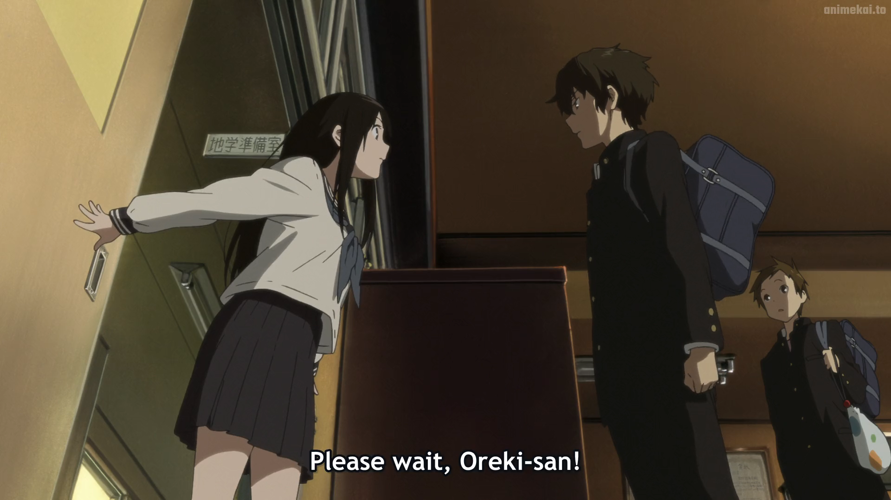
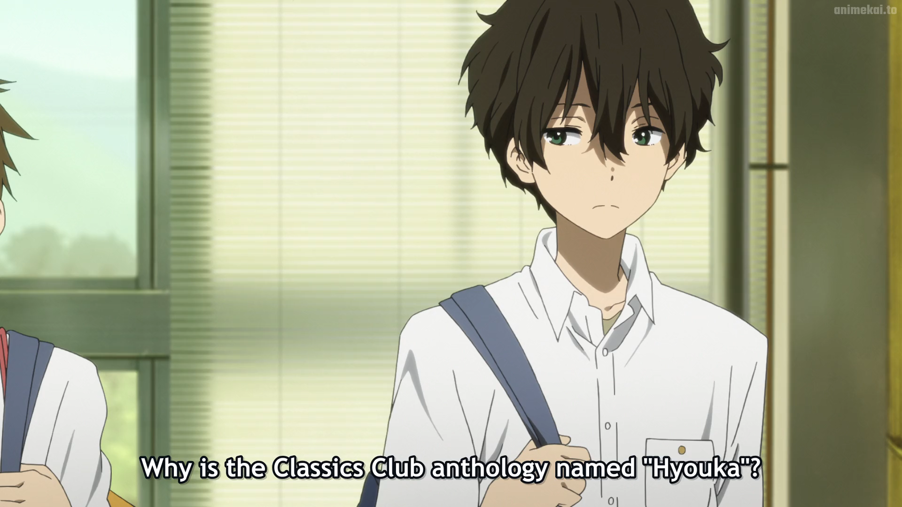
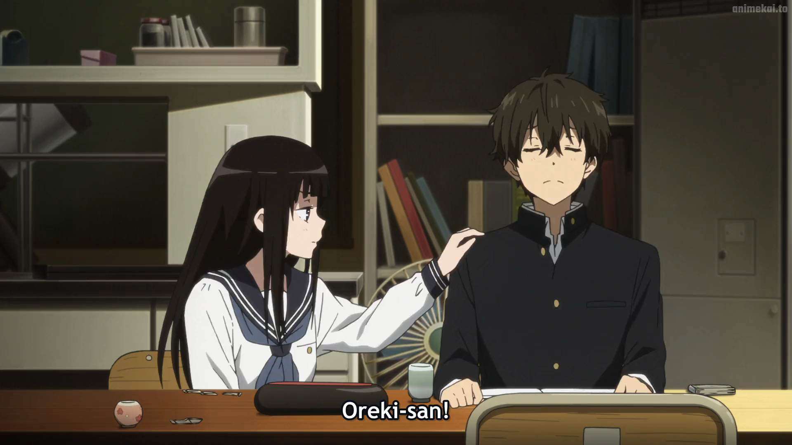
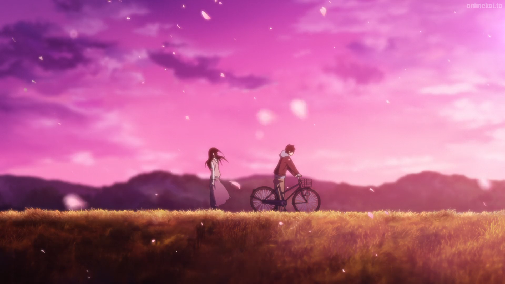

Houtarou Oreki The Energy-Conserving Detective
"I don't do anything I don't have to. What I have to do, I do quickly."
About Houtarou
The reluctant genius of the Classics Club
The Lazy Detective
Houtarou Oreki is a quiet, highly intelligent student at Kamiyama High School. He follows a strict energy conservation philosophy: avoid doing anything unnecessary.
However, when he joins the Classics Club at the request of his sister, Oreki finds himself drawn into solving mysteries especially those sparked by the endlessly curious Chitanda Eru.
Genius Mind
His deductions are sharp, subtle, and effective.
Classics Club
Where his journey of mystery-solving began.
Personal Growth
He evolves from isolation to introspection.
Media Gallery
Capturing the essence of Oreki's world


"I don't do anything I don't have to. What I have to do, I do quickly."— Houtarou Oreki
"If I don't have to do it, I won't. If I have to do it, I'll make it quick."— Houtarou Oreki
"I'm curious!"— Eru Chitanda
"The culprit is among us."— Houtarou Oreki
"A detective story without a detective is just a mystery."— Houtarou Oreki
"I suppose I have no choice but to be curious."— Houtarou Oreki

Episode 1 - "The Resurrection of the Ancient Library"
Oreki's first case with the Classics Club

Episode 5 - "The Truth of the Historic Classic Literature Club"
Uncovering the club's hidden past

Episode 19 - "Anyone Who Knows"
The Kanya Festival anthology mystery

Episode 22 - "The Hina Doll that Took a Detour"
Final episode's emotional climax
Watch Hyouka
Discover the quiet brilliance of Houtarou Oreki